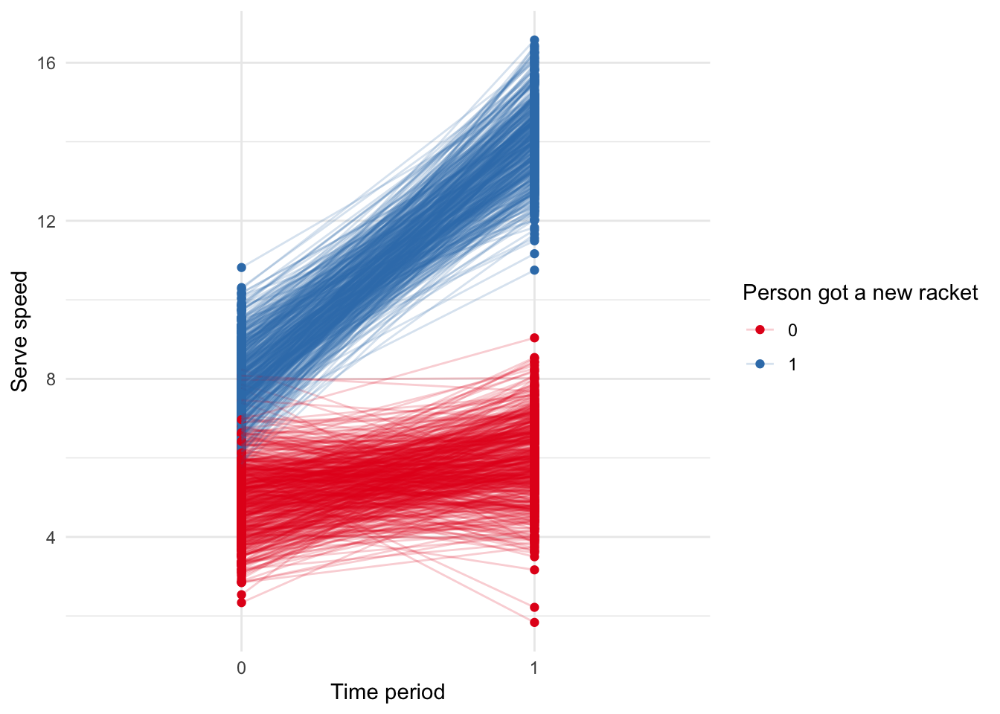

25 Matching & difference-in-differences
Required reading
- Gertler, Paul, Sebastian Martinez, Patrick Premand, Laura Rawlings, and Christel Vermeersch, ‘Impact Evaluation in Practice’, Chapters 7 and 8.
Recommended reading
- Alexander, Monica, Polimis, Kivan, and Zagheni, Emilio, 2019,’ The impact of Hurricane Maria on out-migration from Puerto Rico: Evidence from Facebook data’, Population and Development Review. (Example of using diff-in-diff to measure the effect of Hurricane Maria.)
- Alexander, Rohan, and Zachary Ward, 2018, ‘Age at arrival and assimilation during the age of mass migration’, The Journal of Economic History, 78, no. 3, 904-937. (Example where I used differences between brothers to estimate the effect of education.)
- Austin, Peter C., 2011, ‘An Introduction to Propensity Score Methods for Reducing the Effects of Confounding in Observational Studies’, Multivariate Behavioral Research, vol. 46, no. 3, pp.399-424. (Broad overview of propensity score matching, with a nice discussion of the comparison to randomised controlled trials.)
- Cunningham, Scott, Causal Inference: The Mixtape, chapters ‘Matching and subclassifications’ and ‘Differences-in-differences’, freely available at: http://scunning.com/cunningham_mixtape.pdf. (Very well-written notes on diff-in-diff.)
- King, Gary, and Richard Nielsen, 2019, ‘Why Propensity Scores Should Not Be Used for Matching’, Political Analysis. (Academic paper on the limits of propensity score matching. Propensity score matching was a big thing in the 90s but everyone knew about these weaknesses and so it died off. Lately, there has been a resurgence because of machine learning people using it without thinking so King and Nielsen wrote a nice paper about its flaws.)
- Saeed, Sahar, Erica E. M. Moodie, Erin C. Strumpf, Marina B. Klein, 2019, ‘Evaluating the impact of health policies: using a difference-in-differences approach’, International Journal of Public Health, 64, pp. 637–642, https://doi.org/10.1007/s00038-018-1195-2.
- Taddy, Matt, 2019, Business Data Science, Chapter 5. (Some brief notes on diff-in-diff that may appeal to some students.)
- Tang, John, 2015, ‘Pollution havens and the trade in toxic chemicals: evidence from U.S. trade flows’, Ecological Economics, vol. 112, pp. 150-160. (Example of using diff-in-diff to estimate pollution.)
Key concepts/skills/etc
- Essential matching methods.
- Weaknesses of matching.
- Difference-in-differences.
Key libraries
broomtidyverse
Key functions/etc
tidy()lm()
Pre-quiz
- Sharla Gelfand has been ‘(s)haring two #rstats functions most days - one I know and love, and one that’s new to me!’. Please go to Sharla’s GitHub page: https://github.com/sharlagelfand/twofunctionsmostdays. Please find a package that she mentions that you have never used. Please find the relevant website for the package. Please describe what the package does and a context in which it could be useful to you.
- Sharla Gelfand has been ‘(s)haring two #rstats functions most days - one I know and love, and one that’s new to me!’. Please go to Sharla’s GitHub page: https://github.com/sharlagelfand/twofunctionsmostdays. Please find a function that she mentions that you have never used. Please look at the help file for that function. Please detail the arguments of the function, and a context in which it could be useful to you.
- What is propensity score matching? If you were matching people, then what are some of the features that you would like to match on? What sort of ethical questions does collecting and storing such information raise for you?
- Putting to one side, the ethical issues, what are some statistical weaknesses with propensity score matching?
- What is the key assumption when using diff-in-diff?
- Please read the fascinating article in The Markup about car insurance algorithms: https://themarkup.org/allstates-algorithm/2020/02/25/car-insurance-suckers-list. Please read the article and tell me what you think. You may wish to focus on ethical, legal, social, statistical, or other, aspects.
- Please go to the GitHub page related to the fascinating article in The Markup about car insurance algorithms: https://github.com/the-markup/investigation-allstates-algorithm. What is great about their work? What could be improved?
25.1 Introduction
The ideal situation, as described in the previous chapter, is rarely possible in a data science setting. Can we really reasonably expect that Netflix would allow us to change prices. And even if they did once, would they let us do it again, and again, and again? Further, rarely can we explicitly create treatment and control groups. Finally, experiments are really expensive and potentially unethical. Instead, we need to make do with what we have. Rather than our counterfactual coming to us through randomisation, and hence us knowing that the two are the same but for the treatment, we try to identify groups that were similar before the treatment, and hence any differences can be attributed to the treatment. In practice, we tend to even have differences between our two groups before we treat. Provided those pre-treatment differences satisfy some assumptions (basically that they were consistent, and we expect that consistency to continue in the absence of the treatment) – the ‘parallel trends’ assumption – then we can look to any difference in the differences as the effect of the treatment. One of the lovely aspects of difference in differences analysis is that we can do it using fairly straight-forward quantitative methods - linear regression with a dummy variable is all that is needed to do a convincing job.
25.2 Motivation
Consider us wanting to know the effect of a new tennis racket on serve speed. One way to test this would be to measure the difference between Roger Federer’s serve speed without the tennis racket and mine with the tennis racket. Sure, we’d find a difference but how do we know how much to attribute to the tennis racket? Another way would be to consider the difference between my serve speed without the tennis racket and my serve speed with the tennis racket. But what if serves were just getting faster naturally over time? Instead, let’s combine the two to look at the difference in the differences!
In this world we measure Federer’s serve and compare it to my serve without the new racket. We then measure Federer’s serve again and measure my serve with the new racket. That difference in the differences would then be our estimate of the effect of the new racket.
What sorts of assumptions jump out at you that we are going to have to make in order for this analysis to be appropriate?
- Is there something else that may have affected only me, and not Roger that could affect my serve speed? Probably. e2) Is it likely that Roger Federer and I have the same trajectory of serve speed improvement? Probably not. This is the ‘parallel trends’ assumption, and it dominates any discussion of difference in differences analysis. Finally, is it likely that the variance of our serve speeds is the same? Probably not.
Why might this be powerful? We don’t need the treatment and control group to be the same before the treatment. We just need to have a good idea of how they differ.
25.3 Example
Let’s generate some data.
library(broom)
library(tidyverse)
set.seed(853)
diff_in_diff_example_data <- tibble(person = rep(c(1:1000), times = 2),
time = c(rep(0, times = 1000), rep(1, times = 1000)),
treatment_group = rep(sample(x = 0:1, size = 1000, replace = TRUE), times = 2)
)
# We want to make the outcome slightly more likely if they were treated than if not.
diff_in_diff_example_data <-
diff_in_diff_example_data %>%
rowwise() %>%
mutate(serve_speed = case_when(
time == 0 & treatment_group == 0 ~ rnorm(n = 1, mean = 5, sd = 1),
time == 1 & treatment_group == 0 ~ rnorm(n = 1, mean = 6, sd = 1),
time == 0 & treatment_group == 1 ~ rnorm(n = 1, mean = 8, sd = 1),
time == 1 & treatment_group == 1 ~ rnorm(n = 1, mean = 14, sd = 1),
)
)Let’s make a graph.
diff_in_diff_example_data$treatment_group <- as.factor(diff_in_diff_example_data$treatment_group)
diff_in_diff_example_data$time <- as.factor(diff_in_diff_example_data$time)
diff_in_diff_example_data %>%
ggplot(aes(x = time,
y = serve_speed,
color = treatment_group)) +
geom_point() +
geom_line(aes(group = person), alpha = 0.2) +
theme_minimal() +
labs(x = "Time period",
y = "Serve speed",
color = "Person got a new racket") +
scale_color_brewer(palette = "Set1")
As it is a simple example, we could also do this manually, by getting the average difference of the differences.
average_differences <-
diff_in_diff_example_data %>%
pivot_wider(names_from = time,
values_from = serve_speed,
names_prefix = "time_") %>%
mutate(difference = time_1 - time_0) %>%
group_by(treatment_group) %>%
summarise(average_difference = mean(difference))
average_differences$average_difference[2] - average_differences$average_difference[1]## [1] 5.058414Let’s use OLS to do the same analysis. The general regression equation is: \[Y_{i,t} = \beta_0 + \beta_1\mbox{Treatment group dummy}_i + \beta_2\mbox{Time dummy}_t + \beta_3(\mbox{Treatment group dummy} \times\mbox{Time dummy})_{i,t} + \epsilon_{i,t}\]
If we use * in the regression then it automatically includes the separate aspects as well as their interaction. It’s the estimate of \(\beta_3\) which is of interest.
diff_in_diff_example_regression <- lm(serve_speed ~ treatment_group*time,
data = diff_in_diff_example_data)
tidy(diff_in_diff_example_regression)| term | estimate | std.error | statistic | p.value |
| (Intercept) | 4.97 | 0.0428 | 116 | 0 |
| treatment_group1 | 3.03 | 0.0622 | 48.7 | 0 |
| time1 | 1.01 | 0.0605 | 16.6 | 2.97e-58 |
| treatment_group1:time1 | 5.06 | 0.088 | 57.5 | 0 |
Fortunately, our estimates are the same!
25.4 Assumptions
If we want to use difference in differences, then we need to satisfy the assumptions. There were three that were touched on earlier, but here I want to focus on one: the ‘parallel trends’ assumption. The parallel trends assumption haunts everything to do with diff-in-diff analysis because we can never prove it, we can just be convinced of it.
To see why we can never prove it, consider an example in which we want to know the effect of a new stadium on a professional sports team’s wins/loses. To do this we consider two teams: the Warriors and the Raptors. The Warriors changed stadiums at the start of the 2019-20 season (the Raptors did not), so we will consider four time periods: the 2016-17 season, 2017-18 season, 2018-19 season, and finally we will compare the performance with the one after they moved, so in the 2019-20 season. The Raptors here act as our counterfactual. This means that we assume the relationship between the Warriors and the Raptors, in the absence of a new stadium, would have continued to change in a consistent way. But we can never know that for certain. We have to present sufficient evidence to assuage any concerns that a reader may have.
For a variety of reasons, it is worth having tougher than normal requirements around the evidence it would take to convince you of an effect.
There are four main ‘threats to validity’ when you are using difference in differences and you should address all of these (Cunningham, 2020, pp. 272–277):
- Non-parallel trends. The treatment and control groups may be based on differences. As such it can be difficult to convincingly argue for parallel trends. In this case, maybe try to find another factor to consider in your model that may adjust for some of that. This may require difference in difference in differences (in the earlier example, perhaps could add in the San Francisco 49ers as they are in the same broad geographic area as the Warriors). Or maybe re-think your analysis to see if you can make a different control group. Adding additional earlier time periods may help but may introduce more issues (see third point).
- Compositional differences. This is a concern when working with repeated cross-sections. What if the composition of those cross-sections change? For instance, if we work at Tik Tok or some other app that is rapidly growing and want to look at the effect of some change. In our initial cross-section, we may have mostly young people, but in a subsequent cross-section, we may have more older people as the demographics of the app usage change. Hence our results may just be an age-effect, not an effect of the change that we are interested in.
- Long-term effects vs. reliability. As we discussed in the last chapter, there is a trade-off between the length of the analysis that we run. As we run the analysis for longer there is more opportunity for other factors to affect the results. There is also increased chance for someone who was not treated to be treated. But, on the other hand, it can be difficult to convincingly argue that short-term results will continue in the long-term.
- Functional form dependence. This is less of an issue when the outcomes are similar, but if they are different then functional form may be responsible for some aspects of the results.
25.5 Matching
This section draws on material from Gelman and Hill, 2007, pp. 207 - 212.
Difference in differences is a powerful analysis framework. After I learnt about it I began to see opportunities to implement it everywhere. But it can be tough to identify appropriate treatment and control groups. In Alexander and Ward, 2018, we compare migrant brothers - one of whom had most of their education in a different country, and the other who had most of their education in the US. Is this really the best match?
We may be able to match based on observable variables. For instance, age-group or education. At two different times we compare smoking rates in 18-year-olds in one city with smoking rates in 18-year-olds in another city. That is fine, but it is fairly coarse. We know that there are differences between 18-year-olds, even in terms of the variables that we commonly observe, say gender and education. One way to deal with this may be to create sub-groups: 18-year-old males with a high school education, etc. But the sample sizes are likely to quickly become small. How do we deal with continuous variables? And also, is the difference between an 18-year-old and a 19-year-old really so different? Shouldn’t we also compare with them?
One way to proceed is to consider a nearest neighbour approach. But there is limited concern for uncertainty in this approach. There is also an issue if you have a large number of variables because you end up with a high-dimension graph. This leads us to propensity score matching.
Propensity score matching involves assigning some probability to each observation. We construct that probability based on the observation’s values for the independent variables, at their values before the treatment. That probability is our best guess at the probability of the observation being treated, regardless of whether it was treated or not. For instance, if 18-year-old males were treated but 19-year-old males were not, then as there is not much difference between 18-year-old males and 19-year-old males our assigned probability would be fairly similar. We can then compare the outcomes of observations with similar propensity scores.
One advantage of propensity score matching is that is allows us to easily consider many independent variables at once, and it can be constructed using logistic regression.
Let’s generate some data to illustrate propensity score matching. Let’s pretend that we work for Amazon. We are going to treat some individuals with free-shipping to see what happens to their average purchase.
sample_size <- 10000
set.seed(853)
amazon_purchase_data <-
tibble(
unique_person_id = c(1:sample_size),
age = runif(n = sample_size,
min = 18,
max = 100),
city = sample(
x = c("Toronto", "Montreal", "Calgary"),
size = sample_size,
replace = TRUE
),
gender = sample(
x = c("Female", "Male", "Other/decline"),
size = sample_size,
replace = TRUE,
prob = c(0.49, 0.47, 0.02)
),
income = rlnorm(n = sample_size,
meanlog = 0.5,
sdlog = 1)
)Now we need to add some probability of being treated with free shipping, which depends on our variables. Younger, higher-income, male and in Toronto all make it slightly more likely.
amazon_purchase_data <-
amazon_purchase_data %>%
mutate(age_num = case_when(
age < 30 ~ 3,
age < 50 ~ 2,
age < 70 ~ 1,
TRUE ~ 0),
city_num = case_when(
city == "Toronto" ~ 3,
city == "Montreal" ~ 2,
city == "Calgary" ~ 1,
TRUE ~ 0),
gender_num = case_when(
gender == "Male" ~ 3,
gender == "Female" ~ 2,
gender == "Other/decline" ~ 1,
TRUE ~ 0),
income_num = case_when(
income > 3 ~ 3,
income > 2 ~ 2,
income > 1 ~ 1,
TRUE ~ 0)
) %>%
rowwise() %>%
mutate(sum_num = sum(age_num, city_num, gender_num, income_num),
softmax_prob = exp(sum_num)/exp(12),
free_shipping = sample(
x = c(0:1),
size = 1,
replace = TRUE,
prob = c(1-softmax_prob, softmax_prob)
)
) %>%
ungroup()
amazon_purchase_data <-
amazon_purchase_data %>%
dplyr::select(-age_num, -city_num, -gender_num, -income_num, -sum_num, -softmax_prob)Finally, we need to have some measure of a person’s average spend. We want those with free shipping to be slightly higher than those without.
amazon_purchase_data <-
amazon_purchase_data %>%
mutate(mean_spend = if_else(free_shipping == 1, 60, 50)) %>%
rowwise() %>%
mutate(average_spend = rnorm(1, mean_spend, sd = 5)
) %>%
ungroup() %>%
dplyr::select(-mean_spend)
# Fix the class on some
amazon_purchase_data <-
amazon_purchase_data %>%
mutate_at(vars(city, gender, free_shipping), ~as.factor(.)) # Change some to factors##
## 0 1
## 9629 371Now we construct a logistic regression model that ‘explains’ whether a person was treated as a function of the variables that we think explain it.
propensity_score <- glm(free_shipping ~ age + city + gender + income,
family = binomial,
data = amazon_purchase_data)We will now add our forecast to our dataset.
amazon_purchase_data <- augment(propensity_score,
data = amazon_purchase_data,
type.predict = "response") %>%
dplyr::select(-.se.fit, -.resid, -.hat, -.sigma, -.cooksd, -.std.resid) Now we use our forecast to create matches. There are a variety of ways to do this. In a moment I’ll step through some code that does it all at once, but as this is a worked example and we only have a small number of possibilities, we can just do it manually.
For every person who was actually treated (given free shipping) we want the untreated person who was considered as similar to them (based on propensity score) as possible.
Here we’re going to use a matching function from the arm package. This finds which is the closest of the ones that were not treated, to each one that was treated.
amazon_purchase_data$treated <- if_else(amazon_purchase_data$free_shipping == 0, 0, 1)
amazon_purchase_data$treated <- as.integer(amazon_purchase_data$treated)
matches <- arm::matching(z = amazon_purchase_data$treated, score = amazon_purchase_data$.fitted)
amazon_purchase_data <- cbind(amazon_purchase_data, matches)Now we reduce the dataset to just those that are matched. We had 371 treated, so we expect a dataset of 742 observations.
amazon_purchase_data_matched <-
amazon_purchase_data %>%
filter(matched != 0) %>%
dplyr::select(-matched, -pairs, -treated)Finally, we can examine the ‘effect’ of being treated on average spend in the ‘usual’ way.
propensity_score_regression <- lm(average_spend ~ age + city + gender + income + free_shipping,
data = amazon_purchase_data_matched)| (1) | |
| (Intercept) | 49.694 *** |
| (0.809) | |
| age | 0.005 |
| (0.011) | |
| cityMontreal | 0.169 |
| (0.734) | |
| cityToronto | 0.652 |
| (0.623) | |
| genderMale | -0.968 * |
| (0.422) | |
| genderOther/decline | -1.973 |
| (2.621) | |
| income | 0.009 |
| (0.021) | |
| free_shipping1 | 10.488 *** |
| (0.380) | |
| N | 742 |
| R2 | 0.513 |
| logLik | -2267.486 |
| AIC | 4552.971 |
| *** p < 0.001; ** p < 0.01; * p < 0.05. | |
I cover propensity score matching here because it is widely used. Hence, you need to know how to use it. People would think it’s weird if you didn’t, in the same way that we have to cover ANOVA people would think it’s weird if we had an entire experimental design course and didn’t cover it even though there are more modern ways of looking at differences between two means. But at the same time you need to know that there are flaws with propensity score matching. I will now discuss some of them.
- Matching. Propensity score matching cannot match on unobserved variables. This may be fine in a class-room setting, but in more realistic settings it will likely cause issues.
- Modelling. The results tend to be specific to the model that is used. King and Nielsen, 2019, discuss this thoroughly.
- Statistically. We are using the data twice.